本节目标
- 安装 sdk、配置环境变量
- 配置 开发工具 vscode
- 配置模拟器 ios、android
- 编写 hello word 运行
1. 安装 SDK
1.1 git 方式
1 | mkdir ~/sdk |
推荐，下次更新直接
git pull
1.2 下载压缩包
2. 配置环境变量
macos $HOME/.bash_profile
1
2
3
4
5
6
7
8> vi $HOME/.bash_profile
# flutter
export PATH=${PATH}:"~/sdk/flutter/bin"
export PUB_HOSTED_URL=https://pub.flutter-io.cn
export FLUTTER_STORAGE_BASE_URL=https://storage.flutter-io.cn
> source $HOME/.bash_profilewindows 下配置
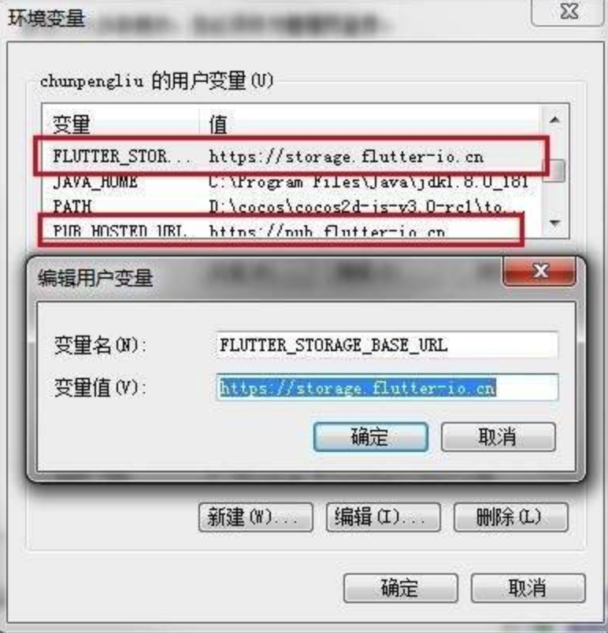
执行 flutter doctor , 自动下载依赖项、编译所需工具
1
2
3
4
5
6
7
8
9
10
11
12
13
14
15
16
17
18
19
20
21
22
23
24
25
26
27
28
29
30
31
32
33
34
35
36
37
38
39
40
41
42
43
44
45
46
47
48
49
50
51
52
53
54
55
56
57
58
59
60
61
62
63
64
65
66
67
68
69
70
71
72
73
74
75
76
77
78
79
80
81
82
83
84
85
86
87
88
89
90> flutter doctor
Downloading Dart SDK from Flutter engine 52c7a1e849a170be4b2b2fe34142ca2c0a6fea1f...
% Total % Received % Xferd Average Speed Time Time Time Current
Dload Upload Total Spent Left Speed
100 120M 100 120M 0 0 2338k 0 0:00:52 0:00:52 --:--:-- 2359k
Building flutter tool...
╔════════════════════════════════════════════════════════════════════════════╗
║ Welcome to Flutter! - https://flutter.dev ║
║ ║
║ The Flutter tool anonymously reports feature usage statistics and crash ║
║ reports to Google in order to help Google contribute improvements to ║
║ Flutter over time. ║
║ ║
║ Read about data we send with crash reports: ║
║ https://github.com/flutter/flutter/wiki/Flutter-CLI-crash-reporting ║
║ ║
║ See Google's privacy policy: ║
║ https://www.google.com/intl/en/policies/privacy/ ║
║ ║
║ Use "flutter config --no-analytics" to disable analytics and crash ║
║ reporting. ║
╚════════════════════════════════════════════════════════════════════════════╝
Flutter assets will be downloaded from https://storage.flutter-io.cn. Make sure you trust this source!
Downloading Material fonts... 0.8s
Downloading android-arm-profile/darwin-x64 tools... 1.0s
Downloading android-arm-release/darwin-x64 tools... 0.8s
Downloading android-arm64-profile/darwin-x64 tools... 1.0s
Downloading android-arm64-release/darwin-x64 tools... 0.8s
Downloading android-arm-dynamic-profile/darwin-x64 tools... 1.0s
Downloading android-arm-dynamic-release/darwin-x64 tools... 0.8s
Downloading android-arm64-dynamic-profile/darwin-x64 tools... 1.0s
Downloading android-arm64-dynamic-release/darwin-x64 tools... 0.8s
Downloading android-x86 tools... 6.9s
Downloading android-x64 tools... 6.9s
Downloading android-arm tools... 3.1s
Downloading android-arm-profile tools... 2.2s
Downloading android-arm-release tools... 1.4s
Downloading android-arm64 tools... 3.3s
Downloading android-arm64-profile tools... 2.0s
Downloading android-arm64-release tools... 1.6s
Downloading android-arm-dynamic-profile tools... 2.3s
Downloading android-arm-dynamic-release tools... 1.8s
Downloading android-arm64-dynamic-profile tools... 2.5s
Downloading android-arm64-dynamic-release tools... 2.2s
Downloading ios tools... 15.5s
Downloading ios-profile tools... 11.9s
Downloading ios-release tools... 8.6s
Downloading Gradle Wrapper... 0.0s
Downloading package sky_engine... 0.3s
Downloading common tools... 4.1s
Downloading common tools... 4.1s
Downloading darwin-x64 tools... 14.2s
Doctor summary (to see all details, run flutter doctor -v):
[✓] Flutter (Channel stable, v1.5.4-hotfix.2, on Mac OS X 10.14.4 18E226, locale zh-Hans-CN)
[!] Android toolchain - develop for Android devices (Android SDK version 26.0.2)
✗ Flutter requires Android SDK 28 and the Android BuildTools 28.0.3
To update using sdkmanager, run:
"/Users/hans/Library/Android/sdk/tools/bin/sdkmanager" "platforms;android-28" "build-tools;28.0.3"
or visit https://flutter.dev/setup/#android-setup for detailed instructions.
✗ Android licenses not accepted. To resolve this, run: flutter doctor --android-licenses
[!] iOS toolchain - develop for iOS devices (Xcode 10.2.1)
✗ libimobiledevice and ideviceinstaller are not installed. To install with Brew, run:
brew update
brew install --HEAD usbmuxd
brew link usbmuxd
brew install --HEAD libimobiledevice
brew install ideviceinstaller
✗ ios-deploy not installed. To install:
brew install ios-deploy
! CocoaPods out of date (1.5.0 is recommended).
CocoaPods is used to retrieve the iOS platform side's plugin code that responds to your plugin usage on the Dart side.
Without resolving iOS dependencies with CocoaPods, plugins will not work on iOS.
For more info, see https://flutter.dev/platform-plugins
To upgrade:
brew upgrade cocoapods
pod setup
[!] Android Studio (version 2.3)
✗ Flutter plugin not installed; this adds Flutter specific functionality.
✗ Dart plugin not installed; this adds Dart specific functionality.
[!] IntelliJ IDEA Ultimate Edition (version 2018.3.3)
✗ Flutter plugin not installed; this adds Flutter specific functionality.
✗ Dart plugin not installed; this adds Dart specific functionality.
[✓] VS Code (version 1.34.0)
[!] Connected device
! No devices available
toolchain 我们可以不装，本机有 Android Studio、XCode 就行
3. 配置 xcode
3.1 安装 xcode
- Apple Store 安装 xcode
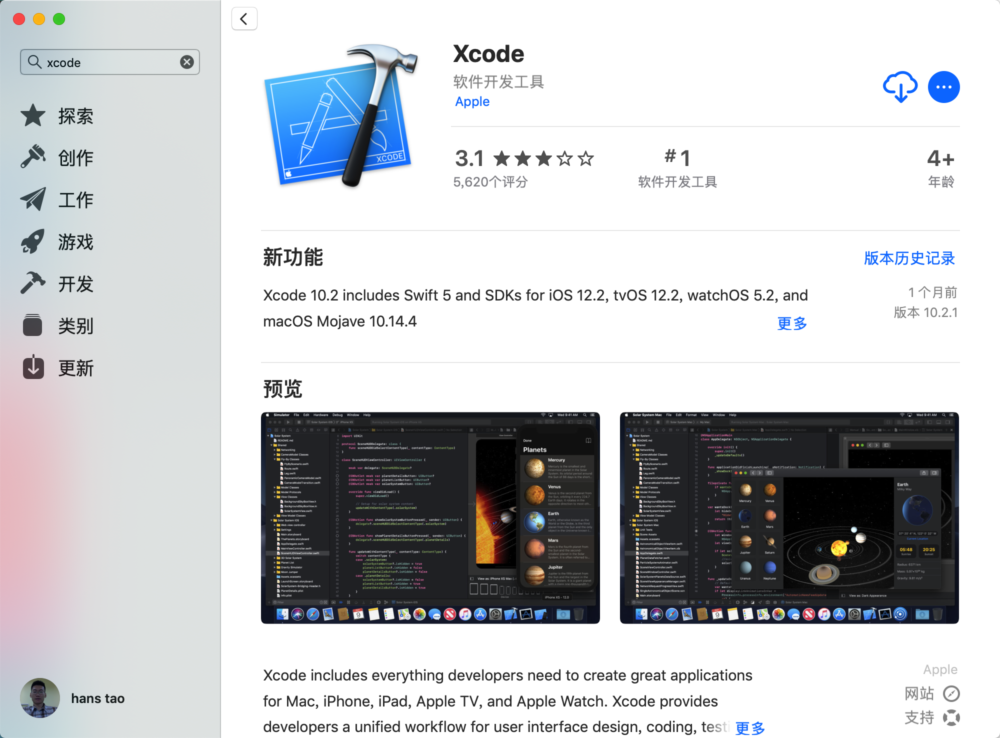
apple store
3.2 自带模拟器
- xcode -> preferences -> components
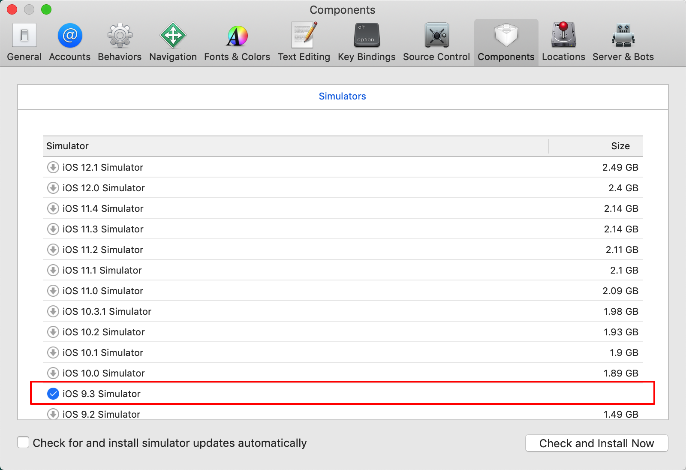
components
3.3 启动模拟器
- xcode -> open developer tool -> simulator
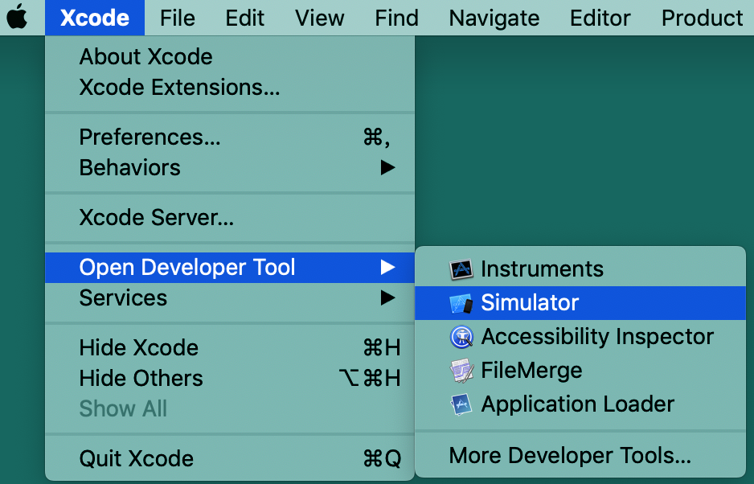
simulator
- 启动完成
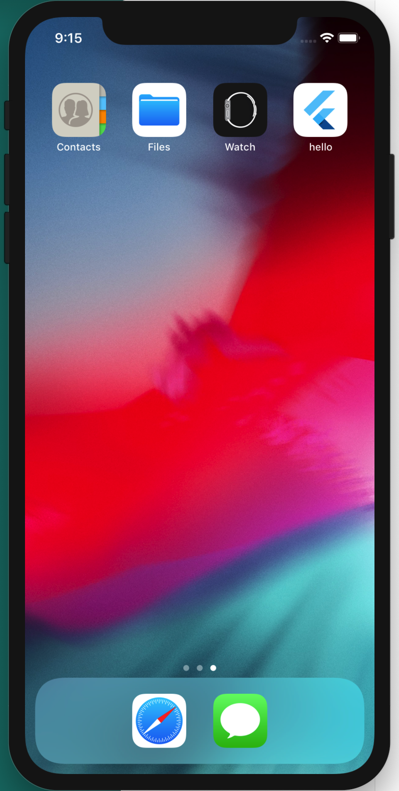
running
- 切换模拟器机型
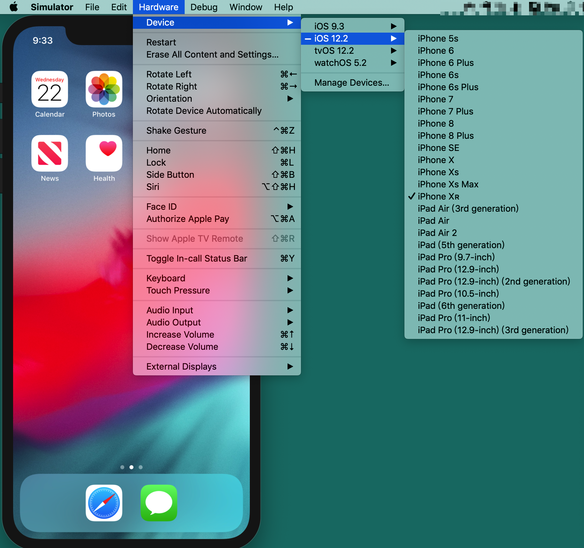
change
4. 配置 Android Studio
安装 Android Studio
配置环境变量
1
2
3
4
5
6
7
8> vi ~/.bash_profile
# android
export ANDROID_HOME=/Users/yourname/Library/Android/sdk
export PATH=${PATH}:$ANDROID_HOME/platform-tools
export PATH=${PATH}:$ANDROID_HOME/tools
source ~/.bash_profile“unable to access android sdk add-on list” 点击取消
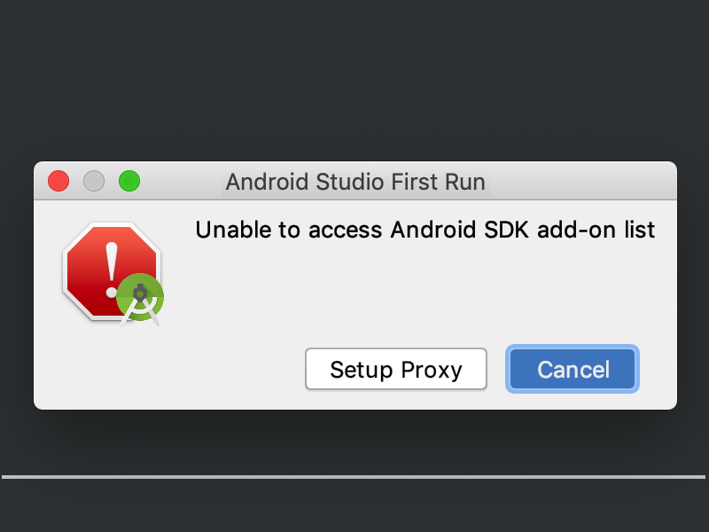
自定义安装，全选项目
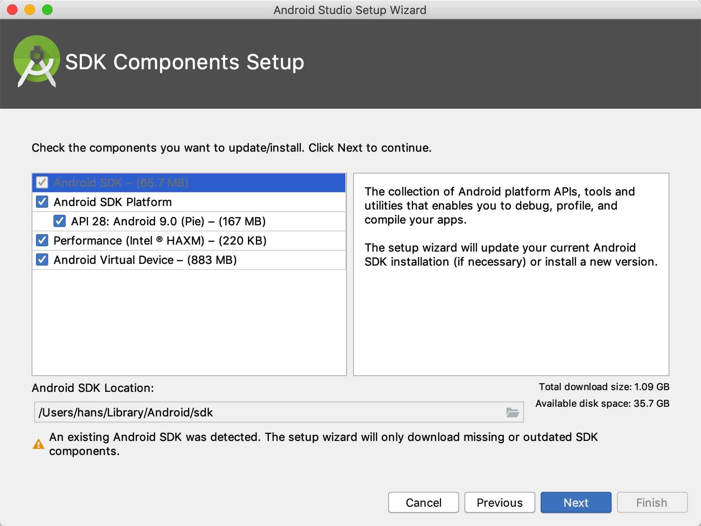
进入模拟器配置
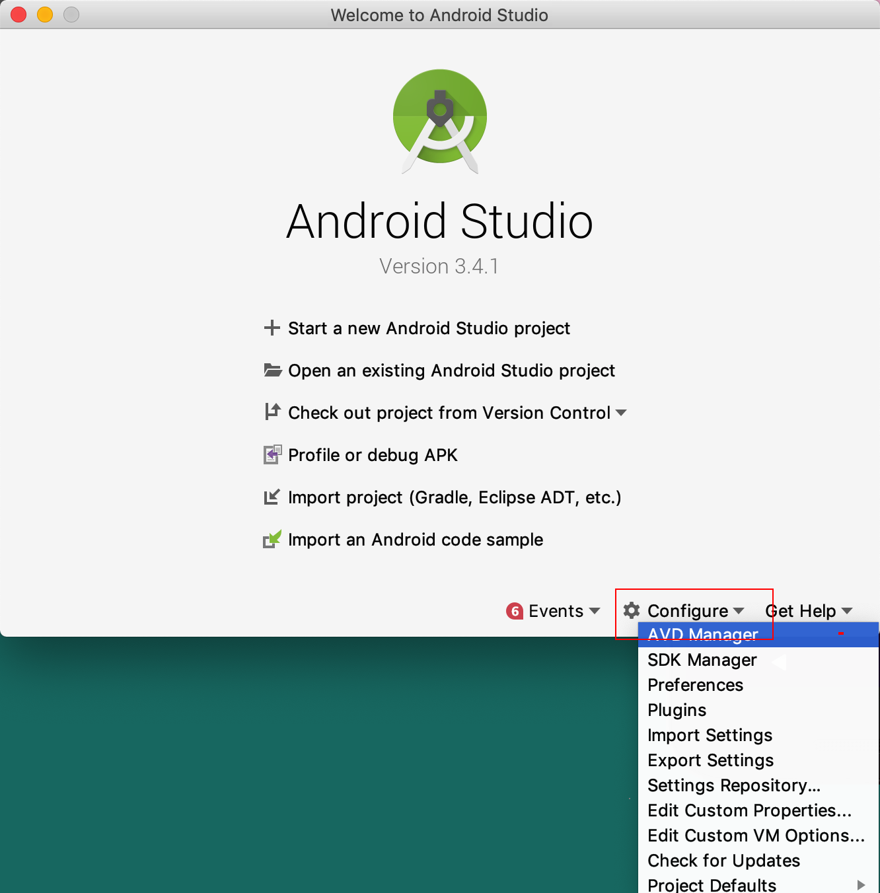
配置模拟器参数
大家机器好点的，就多给点内存和空间吧，这样模拟器运行的快些
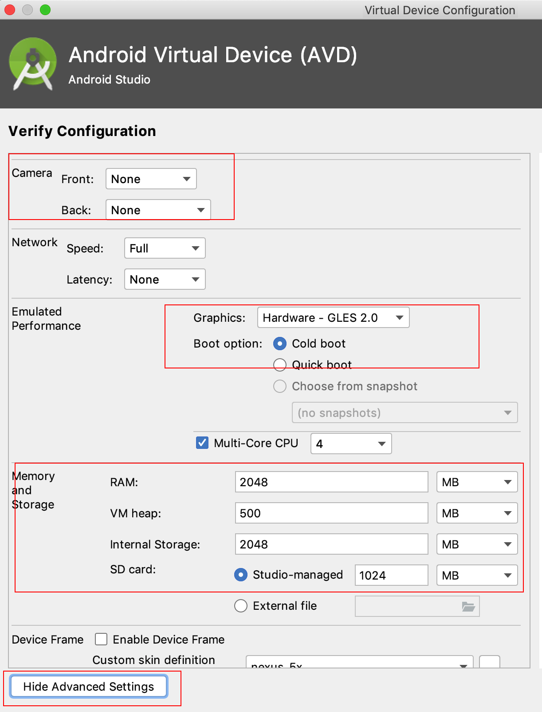
运行模拟器
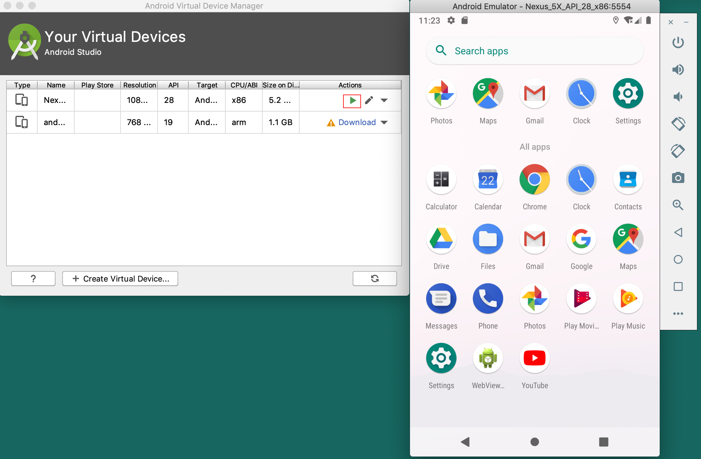
5. 配置 vscode
安装
插件 flutter
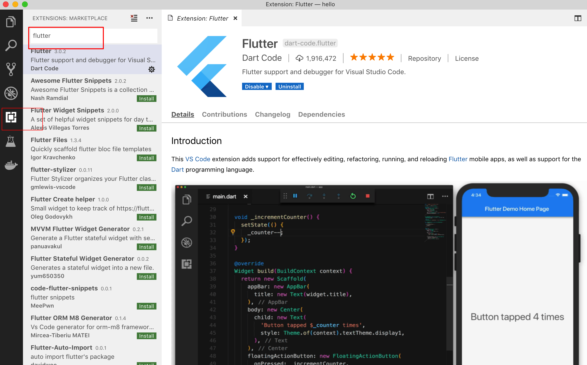
第一次运行选择 sdk 目录
6. 编写 helloword
运行向导
shift + command + p
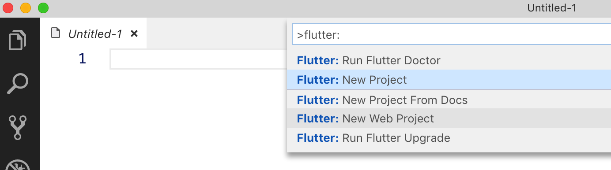
自动生成项目代码，拉取程序包
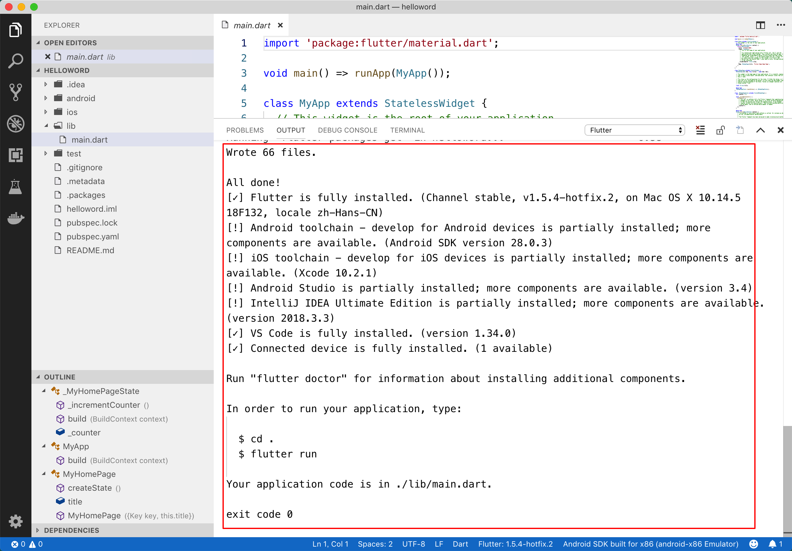
运行程序
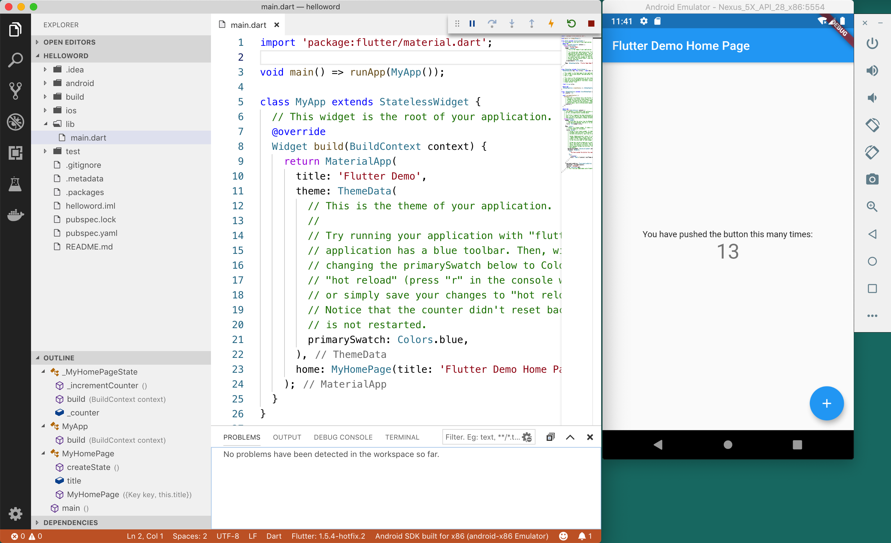
参考
© 猫哥